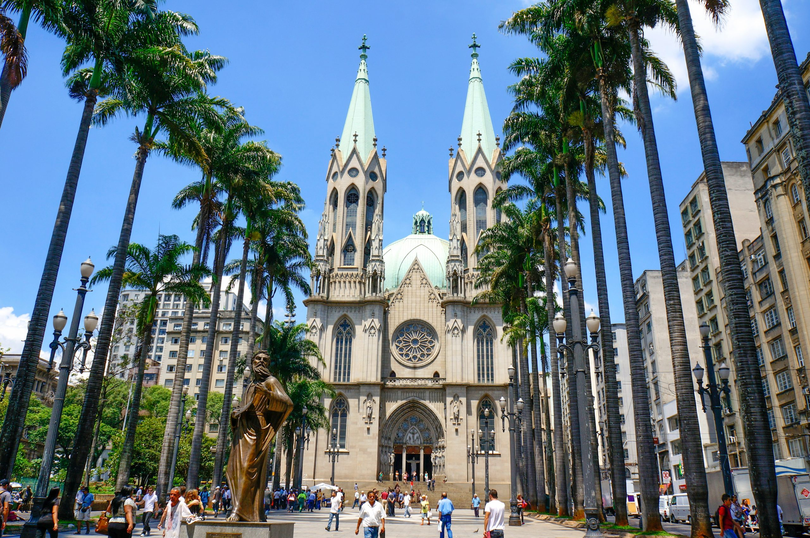
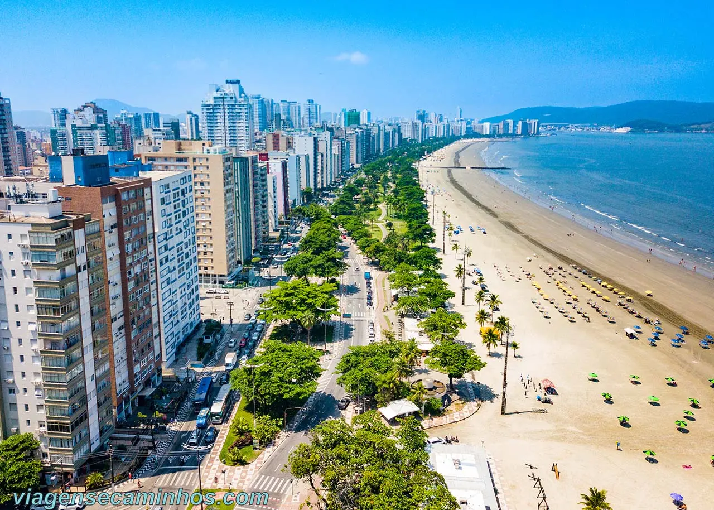
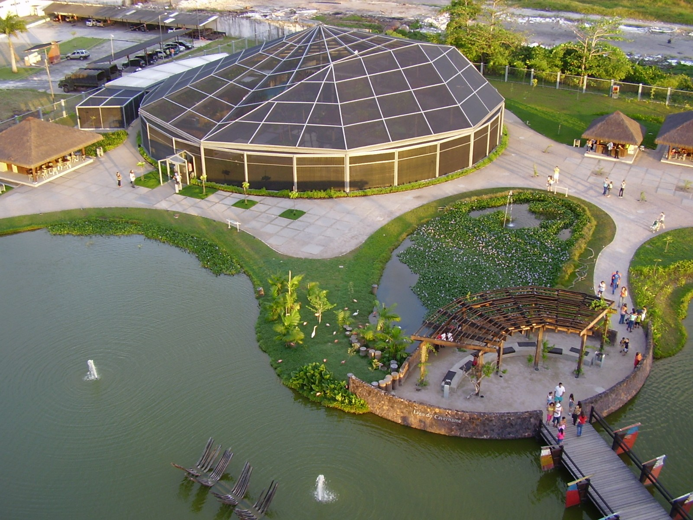
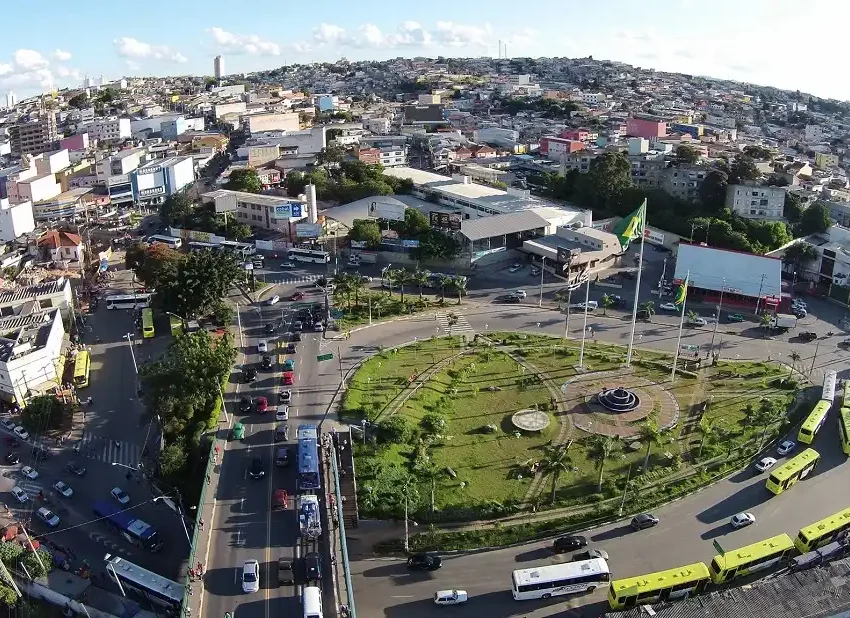
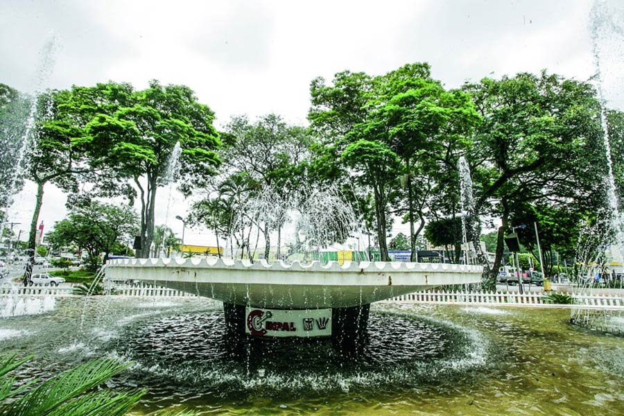
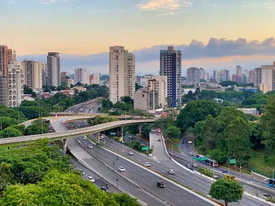
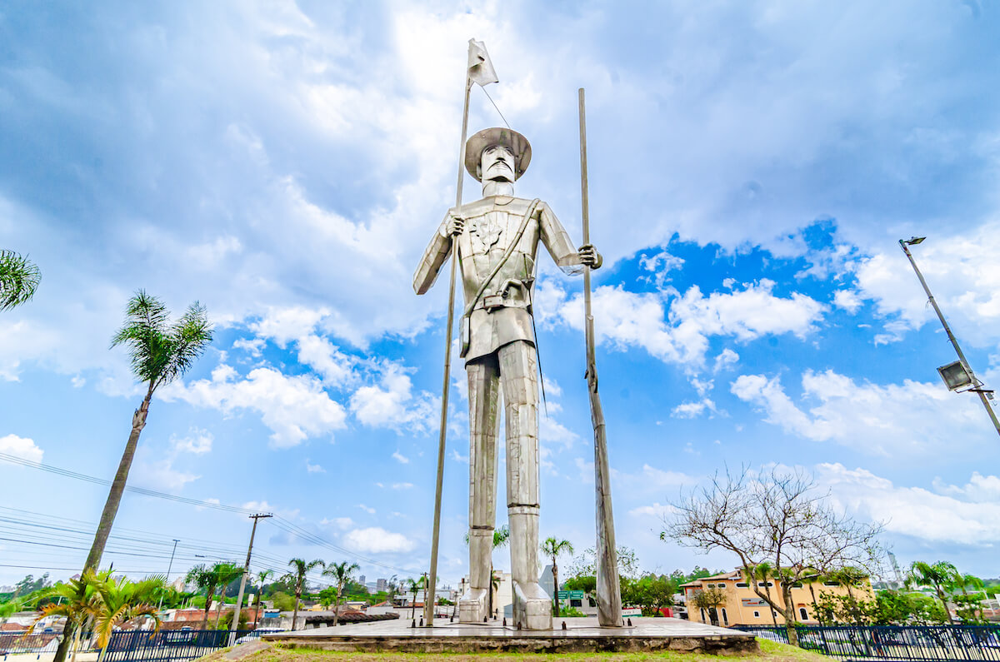

São Paulo foi fundada em 1554 pelos jesuítas e, ao longo dos séculos, se transformou em uma metrópole global. O crescimento acelerado no século XX, impulsionado pela industrialização e imigração, transformou a cidade em um dos principais centros financeiros e culturais da América Latina. São Paulo é conhecida por sua diversidade, com fortes influências culturais de italianos, japoneses, árabes, nordestinos, entre outros grupos que ajudaram a moldar a cidade.

1º São Paulo
A capital do estado, apesar de sua riqueza, apresenta grandes disparidades entre bairros ricos e favelas.

2º Guarulhos
Segundo maior município em população, com áreas ricas contrastando com regiões mais pobres.
Guarulhos foi fundada em 1560 e, ao longo dos anos, evoluiu de um pequeno povoado para uma grande cidade industrial. A construção do Aeroporto Internacional de São Paulo-Guarulhos nos anos 1980 trouxe grande desenvolvimento, transformando a cidade em um hub logístico importante. Além disso, Guarulhos tem uma rica história ligada à imigração italiana e portuguesa.

3º Osasco
Importante centro econômico, mas com desigualdade marcante entre suas regiões.
Osasco foi oficialmente emancipada de São Paulo em 1962, mas seu desenvolvimento já vinha crescendo devido à industrialização. A cidade se tornou um importante centro econômico, atraindo empresas e indústrias, principalmente nos setores de tecnologia e serviços. Osasco é também conhecida por ter sido o berço do Movimento dos Trabalhadores Sem Teto (MTST).

4º Santos
Cidade portuária com altos rendimentos, mas também com comunidades carentes.
Fundada em 1546, Santos é uma das cidades mais antigas do Brasil e desempenhou um papel crucial no desenvolvimento do país como principal porto de exportação de café no século XIX. A cidade também é conhecida pelo Santos Futebol Clube, que revelou Pelé, um dos maiores jogadores de futebol de todos os tempos.

5º São Bernardo do Campo
Famosa pela indústria automobilística, possui contrastes sociais evidentes.
São Bernardo do Campo foi um dos principais centros da industrialização no Brasil, especialmente na indústria automobilística. Durante o século XX, a cidade se destacou como palco de importantes movimentos trabalhistas, incluindo as greves dos metalúrgicos lideradas por Luiz Inácio Lula da Silva nos anos 1970.

6º Diadema
Região metropolitana com muitas áreas vulneráveis socialmente.
Diadema foi fundada oficialmente em 1959, após desmembrar-se de São Bernardo do Campo. A cidade cresceu rapidamente como um polo industrial, mas enfrenta desafios significativos em termos de infraestrutura e desigualdade social. Diadema também é conhecida por ter adotado políticas públicas inovadoras para melhorar a segurança e a qualidade de vida.

7º Carapicuíba
Município com alta densidade populacional e infraestrutura limitada.
Carapicuíba é uma das cidades mais antigas da Região Metropolitana de São Paulo, fundada como um aldeamento jesuíta em 1580. A cidade cresceu rapidamente durante o século XX, impulsionada pelo desenvolvimento urbano e pela migração. Carapicuíba é conhecida por sua alta densidade populacional e por desafios significativos em termos de infraestrutura e serviços públicos.

8º Taboão da Serra
Localizada na região metropolitana, com considerável desigualdade entre regiões.
Taboão da Serra se desenvolveu a partir de um pequeno povoado e se tornou um município em 1959. A cidade cresceu principalmente como um subúrbio de São Paulo, atraindo pessoas em busca de moradia mais acessível. Taboão da Serra é uma das menores cidades em área da Grande São Paulo, mas tem uma alta densidade populacional.

9º Itaquaquecetuba
Marcada por pobreza e limitações em serviços públicos.
Itaquaquecetuba, frequentemente chamada de " Itaqua", é uma cidade da Região Metropolitana de São Paulo que tem uma história rica, remontando ao período colonial. Fundada oficialmente em 1560 como um aldeamento indígena, Itaquaquecetuba cresceu ao longo dos séculos, mas seu desenvolvimento econômico foi lento até a metade do século XX, quando começou a se industrializar. A cidade é marcada por um crescimento populacional acelerado, o que trouxe desafios relacionados à infraestrutura e serviços públicos.

10º Mogi das Cruzes
Apesar do desenvolvimento, ainda enfrenta desafios significativos em termos de desigualdade.
Mogi das Cruzes é uma das cidades mais antigas do estado de São Paulo, fundada em 1560. A cidade teve um papel importante durante o período colonial, servindo como um entreposto de comércio e ponto estratégico para os bandeirantes. Ao longo do século XX, Mogi das Cruzes se desenvolveu como um importante centro agrícola, especialmente na produção de hortaliças e flores, além de se industrializar. A cidade é conhecida pela sua forte herança japonesa, sendo uma das maiores comunidades nipo-brasileiras do país.